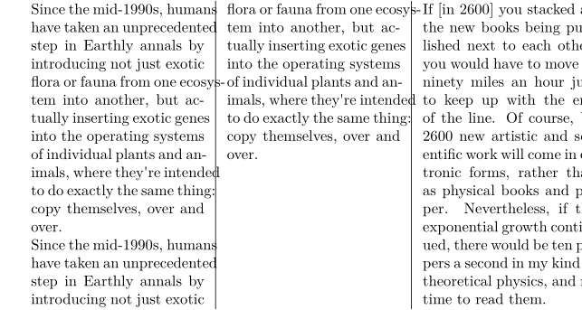

Contents
Summary
The instances of \startmixedcolumns ... \stopmixedcolumns are used for typesetting material in multiple columns.
Instances
| \startitemgroupcolumns ... \stopitemgroupcolumns | |
| \startboxedcolumns ... \stopboxedcolumns | |
| \startcolumns ... \stopcolumns |
Settings instance
Description
Start a columnation environment. You must specify how many columns you want using [n=2], unless you have already done so using \setupcolumns. A new column can be forced with \column. A columnation environment that does not fill up the remainder of the page will be balanced by default, rather than produce full columns next to empty ones.
Examples
Example 1
-
\enableregime[utf] \setuppapersize[A5] % Indentation helps us see where one paragraph ends and the next begins \setupindenting[yes, small] \startcolumns[n=3,separator=rule] % [rule=on] seems to be deprecated \input weisman \input weisman % Start the Hawking quotation in a new column \column \input hawking \stopcolumns
- 
Notes
See also
- \definemixedcolumns
- \setupmixedcolumns
- page-mix.mkiv
- \defineparagraphs for 'paragraphs side-by-side' columnation
- \column
Help from ConTeXt-Mailinglist/Forum
All issues with:
- \startitemgroupcolumns on the mailing list (all results)
- \startitemgroupcolumns on the mailing list (subject only)
- \startitemgroupcolumns on stack exchange
- \startitemgroupcolumns in ConTeXt's source